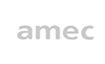
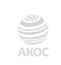
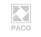
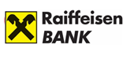

Лидер Российского рынка медиаизменений



Крупнейшее медиааналитическое агентство в России, с 2005 года
предоставляющее услуги по мониторингу и анализу СМИ и соцмедиа для брендов, государственных
корпораций и структур, малого и среднего бизнеса
Заказать консультацию
ТОП-30 Нацрейтинга коммуникационных компаний (НР2К)
Лидеры в области мониторинга и аналитики медиа по версии Ruward (2018)

Многократные победители AMEC Awards
Мы помогаем бизнесам и брендам в направлениях:
Мониторингово-аналитическое сопровождение
Коммуникационные исследования
Отстройка бизнес-процессов и консалтинг
Репутационный маркетинг, ОRM
Работа с блогерами
IT-разработка
Мониторингово-аналитическое сопровождение
1 Настраиваем регулярную аналитику и мониторинг СМИ и соцмедиа для PR-отделов и
пресс-служб компаний любого масштаба, разрабатываем отчетность и KPI, помогаем с оценкой
эффективности коммуникаций.
Коммуникационные исследования
2 Настраиваем регулярную аналитику и мониторинг СМИ и соцмедиа для PR-отделов и
пресс-служб компаний любого масштаба, разрабатываем отчетность и KPI, помогаем с оценкой
эффективности коммуникаций.
Отстройка бизнес-процессов и консалтинг
3 Настраиваем регулярную аналитику и мониторинг СМИ и соцмедиа для PR-отделов и
пресс-служб компаний любого масштаба, разрабатываем отчетность и KPI, помогаем с оценкой
эффективности коммуникаций.
Мониторингово-аналитическое сопровождение
1 Настраиваем регулярную аналитику и мониторинг СМИ и соцмедиа для PR-отделов и
пресс-служб компаний любого масштаба, разрабатываем отчетность и KPI, помогаем с оценкой
эффективности коммуникаций.
Репутационный маркетинг, ОRM
4 Настраиваем регулярную аналитику и мониторинг СМИ и соцмедиа для PR-отделов и
пресс-служб компаний любого масштаба, разрабатываем отчетность и KPI, помогаем с оценкой
эффективности коммуникаций.
Работа с блогерами
5 Настраиваем регулярную аналитику и мониторинг СМИ и соцмедиа для PR-отделов и
пресс-служб компаний любого масштаба, разрабатываем отчетность и KPI, помогаем с оценкой
эффективности коммуникаций.
IT-разработка
6 Настраиваем регулярную аналитику и мониторинг СМИ и соцмедиа для PR-отделов и
пресс-служб компаний любого масштаба, разрабатываем отчетность и KPI, помогаем с оценкой
эффективности коммуникаций.
Наши клиенты
Андрей Быкасов
Директор по коммуникациям
Компания «ВымпелКом» сотрудничает с медиааналитическим агентством «Экс Либрис»
с 2008 года и с каждым годом убеждается, что это одно из наиболее надежных, креативных и
продвинутых агентств на отечественном рынке медиаисследований.
Юлия Ильина
Руководитесь пресс службы
Вместе с агентством «ЭксЛибрис» нам удалось выстроить эффективную систему
оценки работы PR-департамента, основанную на релевантных интегральных показателях.
Владимир Торин
Начальник управления
За время нашего сотрудничества Агентство зарекомендовало себя как надежный
партнер, предоставляющий качественные услуги и выполняющий свою работу на высоком
профессионально уровне.
Андрей Быкасов
Директор по коммуникациям
Компания «ВымпелКом» сотрудничает с медиааналитическим агентством «Экс Либрис»
с 2008 года и с каждым годом убеждается, что это одно из наиболее надежных, креативных и
продвинутых агентств на отечественном рынке медиаисследований.
Юлия Ильина
Руководитесь пресс службы
Вместе с агентством «ЭксЛибрис» нам удалось выстроить эффективную систему
оценки работы PR-департамента, основанную на релевантных интегральных показателях.
Владимир Торин
Начальник управления
За время нашего сотрудничества Агентство зарекомендовало себя как надежный
партнер, предоставляющий качественные услуги и выполняющий свою работу на высоком
профессионально уровне.
Андрей Быкасов
Директор по коммуникациям
Компания «ВымпелКом» сотрудничает с медиааналитическим агентством «Экс Либрис»
с 2008 года и с каждым годом убеждается, что это одно из наиболее надежных, креативных и
продвинутых агентств на отечественном рынке медиаисследований.
Юлия Ильина
Руководитесь пресс службы
Вместе с агентством «ЭксЛибрис» нам удалось выстроить эффективную систему
оценки работы PR-департамента, основанную на релевантных интегральных показателях.
Владимир Торин
Начальник управления
За время нашего сотрудничества Агентство зарекомендовало себя как надежный
партнер, предоставляющий качественные услуги и выполняющий свою работу на высоком
профессионально уровне.

Кейсы
Мониторинг и анализ СМИ
2017. Разовый проект
«Промобот» – пермская высокотехнологичная компания, занимающаяся производством и
продажей первых абсолютно автономных сервисных роботов авторской конструкции. Компания
основана в 2013 году и осуществляет исследования при грантовой поддержке фонда
«Сколково».
Мониторинг и анализ СМИ
2017. Разовый проект
«Промобот» – пермская высокотехнологичная компания, занимающаяся производством и
продажей первых абсолютно автономных сервисных роботов авторской конструкции. Компания
основана в 2013 году и осуществляет исследования при грантовой поддержке фонда
«Сколково».
Мониторинг и анализ СМИ
2017. Разовый проект
«Промобот» – пермская высокотехнологичная компания, занимающаяся производством и
продажей первых абсолютно автономных сервисных роботов авторской конструкции. Компания
основана в 2013 году и осуществляет исследования при грантовой поддержке фонда
«Сколково».
Приглашение на консультацию-брифинг по вашей задаче
Забронируйте встречу с экспертом по интересующему направлению. Прямо на звонке разберем ваш
запрос, выясним чем можем быть полезны, расскажем о возможных вариантах решения и ответим на
вопросы.
Записаться на консультацию
Наша команда
Евгений Ларионов
Основатель
Степень Executive MBA и диплом MIT. Основатель агентства Ex Libris
Основатель сети Coffee and the City, партнер в ExperumExperum. Инвестор.
Состоял в совете директоров AMEC и АКОС. Руководитель Ассоциации менторов Школы Управления
СКОЛКОВО.
Иван Рычков.
CEO
Исполнительный директор Ex LibrisLibris. Стратегическое развитие
агентства, его продуктов, практик и команды.
Эксперт в области медиаизмеренийи аналитики медиа, сертифицированный AMEC
Виктория Прилепская.
CBDO
Директор по развитию в Ex Libris Libris. Стратегические
партнерства и работа с ключевыми клиентами
Опыт работы в маркетинге, коммуникациях и развитии бизнеса – более 13 лет. Бэкграунд
- PRP Group, DIM, KPMG, ACCA, Ward Howell
Андрей Потеряхин.
CTO
Технический директор Ex Libris Libris.Руководит разработкой
и поддержкой собственных решений агентства в области аналитики медиа, ML и
анализа данных.
Болеe 15 лет опыта в разработке. Ранее – TL в Online Shows Shows, Marketing
Solutions Solutions.
Оставьте заявку и мы расчетаем
стоимость вашего продукта